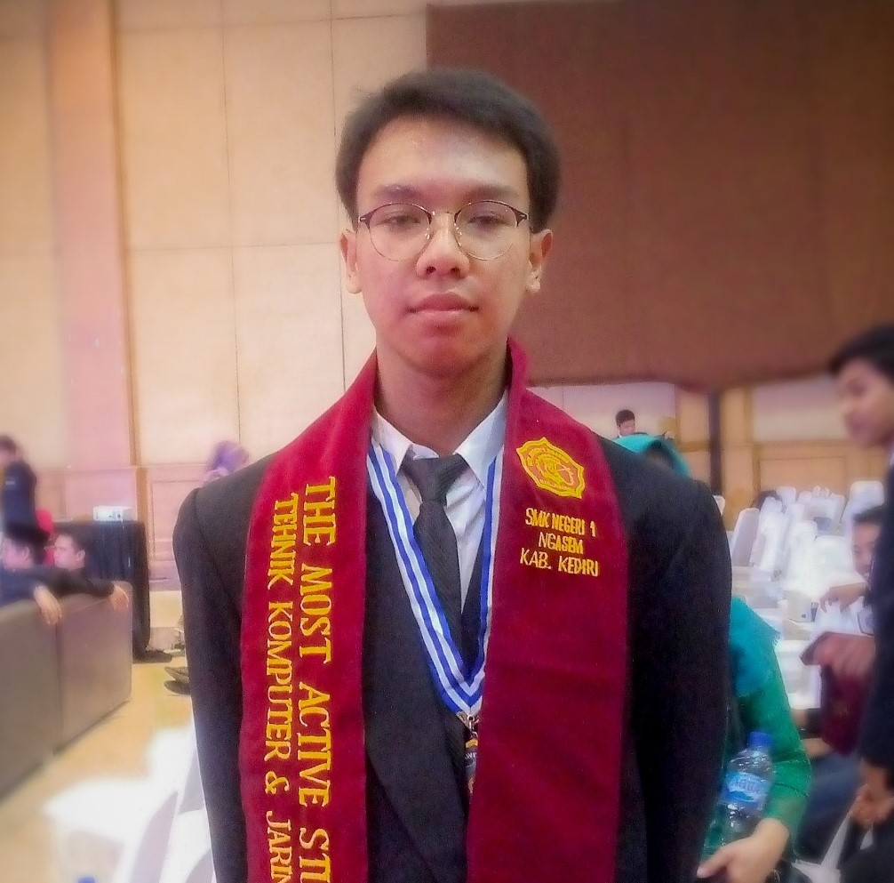

Saya adalah anak laki-laki berusia 18 tahun yang lahir dan dibesarkan di Kediri.Saya adalah lulusan dari SMKN 1 Ngasem jurusan Teknik Komputer & Jaringan. Saya sekarang sedang menjalani pendidikan di United Tractor School sebagai siswa IT Programmer. Disini saya belajar banyak hal tidak hanya soal pelajaran tetapi juga soal sopan santun dan juga etika dalam bermasyarakat.

Indra Febry Setyawan
Web Developer
Saya menyukai Pemrograman semenjak saya masih duduk di di bangku SMP tepatnya pada saat akan lulus. Saya memiliki cita-cita untuk menjadi seorang Full Stack Web Development. Saya dulunya berencana melanjutkan SMK dengan jurusan Rekayasa Perangkat Lunak, tetapi karena di daerah saya tidak ada SMK negeri dengan jurusan RPL. Saya memutuskan memasuki jurusan Teknik Komputer dan Jaringan dan belajar pemrograman secara otodidak.